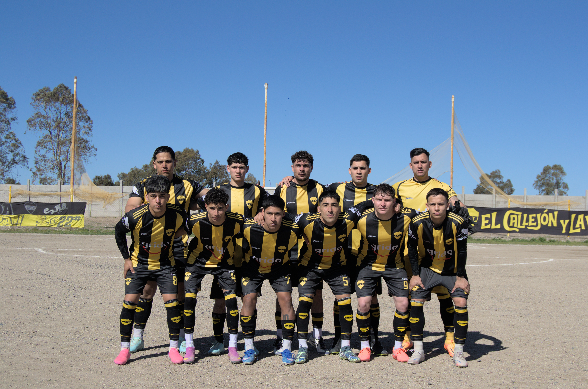
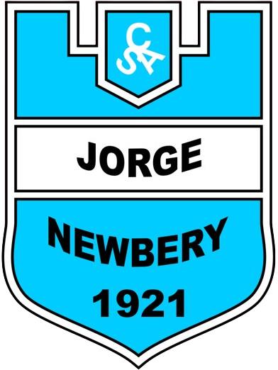

Fecha 1
—
Libre
Talleres queda libre
Primera rueda
 TALLERES
SAN ANTONIO OESTE
TALLERES
SAN ANTONIO OESTE

Talleres, el orgullo aurinegro de San Antonio Oeste.
CONOCÉ NUESTRA HISTORIA ↗
Talleres SAO
Fixture de la fase de grupos · Ida y vuelta
Primera rueda

Domingo 6 de septiembre de 2026 · 13:00 hs
Cancha de Talleres · San Antonio Oeste
Domingo 13 de septiembre de 2026
Estadio Miguel Ángel Recondo · Carmen de Patagones
Horario a confirmar
Segunda rueda
Fecha y horario a confirmar
Fecha y horario a confirmar
El Club Atlético Talleres nació el 31 de julio de 1931 en San Antonio Oeste, Río Negro. El amarillo y el negro son los colores que nos identifican.
Consultar ficha del club ↗Subsede Atlántica. El fútbol de nuestra región, con los colores de Talleres.
Franjas verticales y una identidad que acompaña al club dentro y fuera de la cancha.
Las novedades del plantel y los resultados se incorporarán cuando estén confirmados.
Av. San Martín 134 · San Antonio Oeste · Río Negro
Cómo llegar ↗